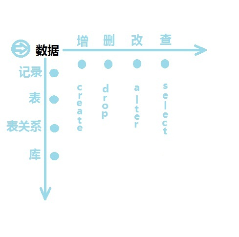

高考的硝烟，刚刚被一场大雨浇灭，空气中依然弥漫着紧张的气氛！在很多学
子和家长的心里盼望着能和好的大学有一面之缘，我也经历过，在将近千万的学子
大军中，挺过独木桥的真的没有几个！
在学校，有这么一个现象，有的孩子很用功，成绩却一直不高不低，每一次的
考试就是对他心理承受的一次考验！也有这么几个人，平时不怎么用功，却在最后
一场赛跑中占尽风头！还有很少的人，太用功，太用功！走进了理想的大学！为什
么会这样，为什么不是下功夫最多的孩子得到的最多！反而会出现一种反
常的现象？先哲的一句名言“天道酬勤”有错了吗？
今天，米老师为我们讲解怎么学习数据库，在那字里行间，我渐渐找到了答案！
我们做任何事情，学习任何一门课程，我们要高效，高速，高质的完成！这里
至关重要的一个东西就是，找一个“眼”！有了这个“眼”我们就能通观全局！做到牵一
发而动全身，做到瞬间完成他人十倍乃至百倍的工作！
让我们先建立这么一个信念！我们行！我们可以！这个一定可以！自信，相信
是一切的前提！
下面来说找眼步骤：
1， 迅速了解全局
这是前提，拿读书举例，首先要速读，不要记忆，要通观全局，分析出书的思
路，理清各个部分之间的关系，有时候我们找的关系。不一定是最合适的，但是一
定要能说服自己，一定要让自己合上书也能讲个大概！这时候要有一张大概且简单
的图在纸上，或者大脑里！
2， 多角度观察
理清了各个部分的关系，然后就是找一个或者多个核心，可以形象的理解为刨
树找“根”的过程，就像一个正弦波，从频域和值域完全是两个图，就可以是两个中
心，他们都是“根”，知识表现的方面不同！这时候要有一张图，各个部分关系复杂
，却有条有理！
3， 综合找眼
结合前两步，分析两张图，做总结性思考，让关系简单且密切，结合我们以往
的生活经历，把“眼”放到生活中，让他们所有的元素都围绕着一件事慢慢展开，娓
娓道来！让自己忘不掉整个故事！
这是数据库的例子大家一眼就能看出来，“眼”就是数据

当我们找到“眼”了工作已经进行了大半，接下来就是用我们的作业，工作，
任务来充实整个结构，让它向外衍生！
有了这一系列的办法，我们就能快速、高效、高质地掌握一种知识！这样，
我们就能轻松快乐的完成一项工作！没有加班！让高考的学子不要苦恼，轻松过
独木桥！
我想一个美好的时代已经到来，网易的一篇新闻让我看到，我们正在经历什
么，我们应该想到，我们要做什么……